Engineering
Here, I designed various projects from network engineering to MVP development. Leveraged various analytic software tools on creating the final design and construction.
#Dress Rehearsal of the Deployment of a Redundant Network Topology
To simulate a real-world failover and recovery environment, we conducted a dry run of our proposed redundant Layer 3 network topology using physical Cisco routers and switches. This rehearsal allowed us to verify the logical design, device roles, and cable paths before full deployment.
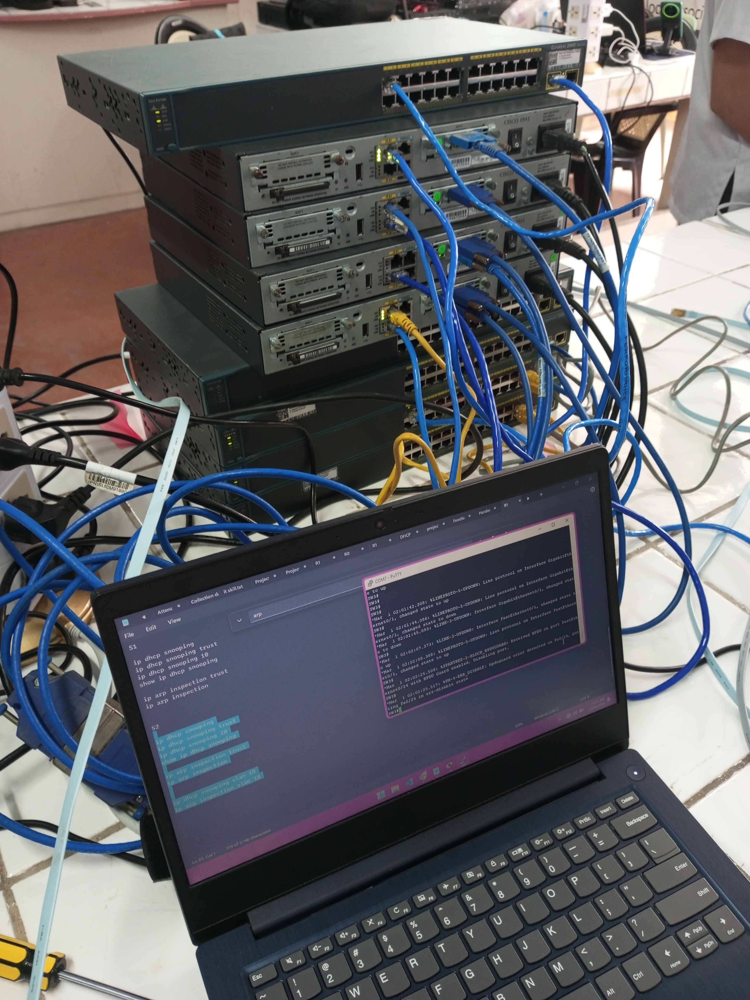 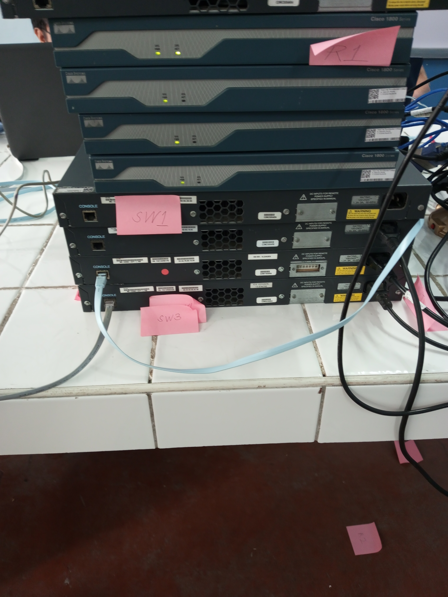 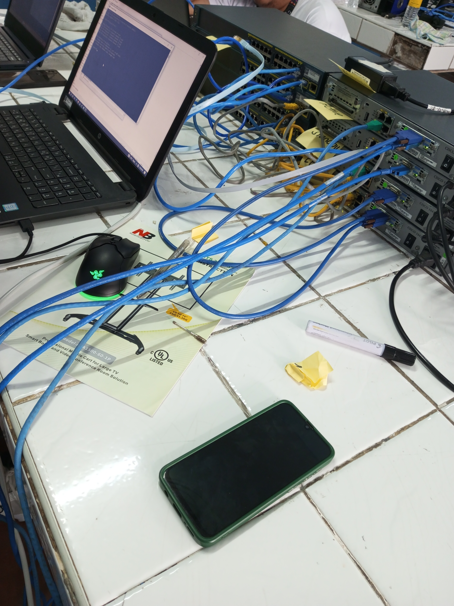 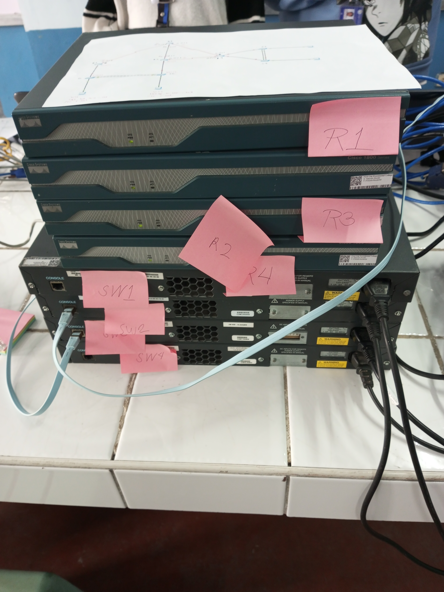- Verified device boot order, port assignments, and VLAN configurations
- Confirmed proper interface mapping and redundancy link behaviorm
- Stress-tested failover routing protocols under manual disconnection scenarios
Devices in Stack
- R1 & R2 – Core routers configured for HSRP failover
- SW1 & SW2 – Distribution layer switches with trunked uplinks
- A1 & A2 – Access layer nodes participating in STP simulations
#Grill
To kick off 2025, I decided to build and test my own grill design—purely for fun, but also as an experiment in airflow optimization for better combustion. I ran a basic CFD (Computational Fluid Dynamics) simulation to analyze how air flows across and under the grill structure.
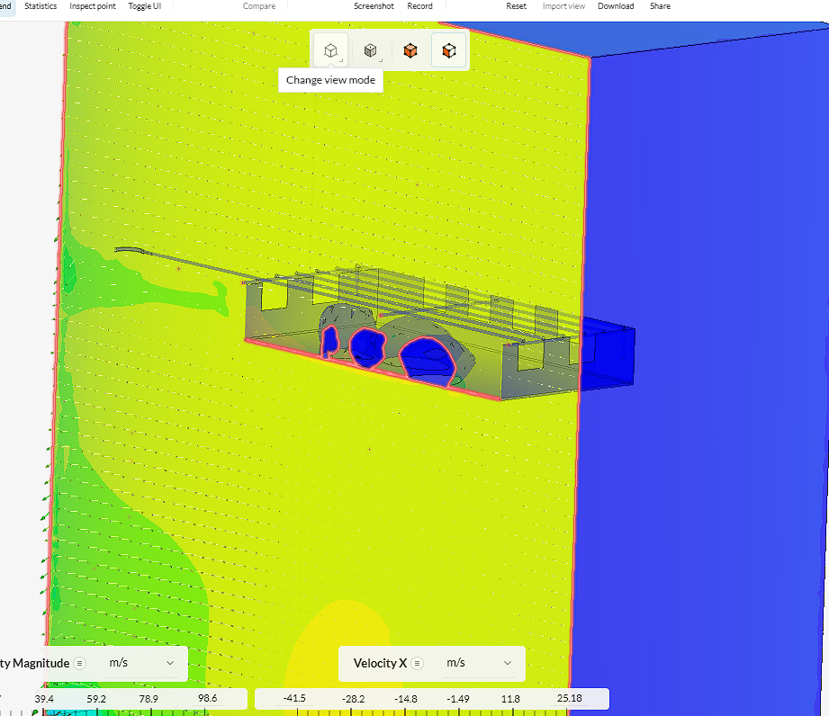 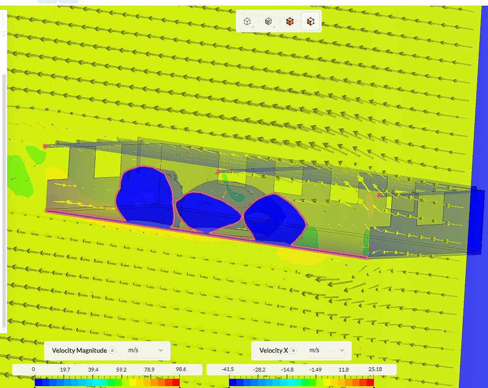 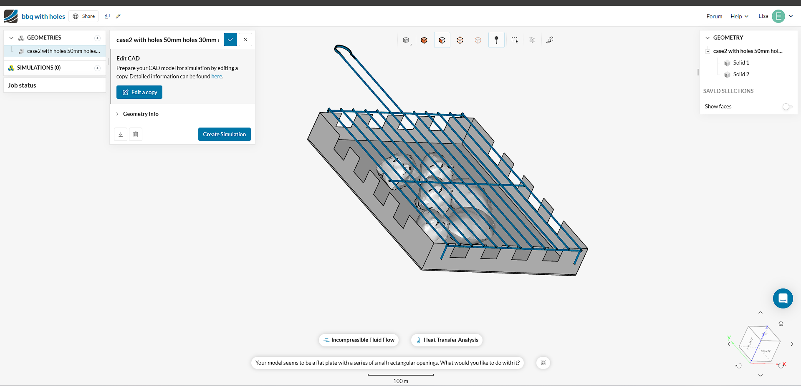 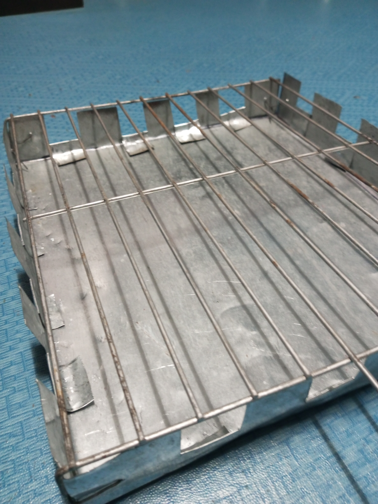- Increased inlet surface area promoted more uniform airflow
- Internal deflectors helped redirect oxygen toward the combustion zone
- Design tweaks minimized backflow and dead zones inside the chamber
I wanted to see how small changes in shape could impact burn efficiency and airflow stability. Just for fun!
#TheBox
As part of our Technopreneurship course, I designed TheBox a smart, secure container concept with potential applications for small businesses and home use. Built in Tinkercad, the model features a lockable hinged door, keypad interface, and space for internal electronics like microcontrollers or sensors.
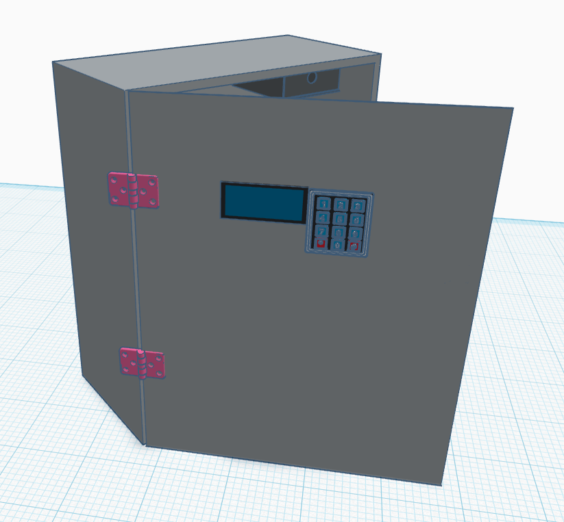 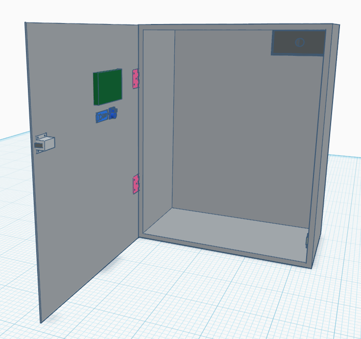 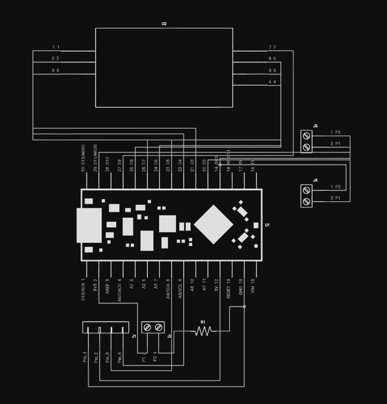 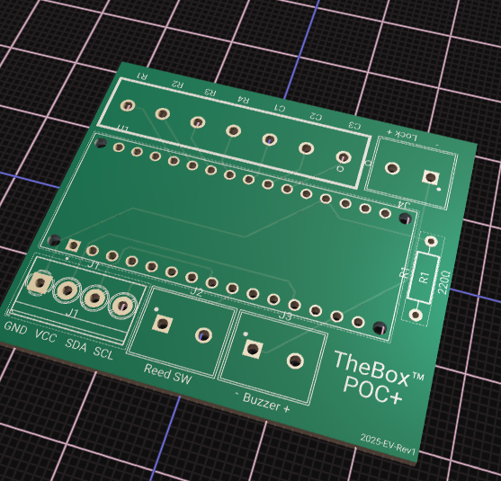 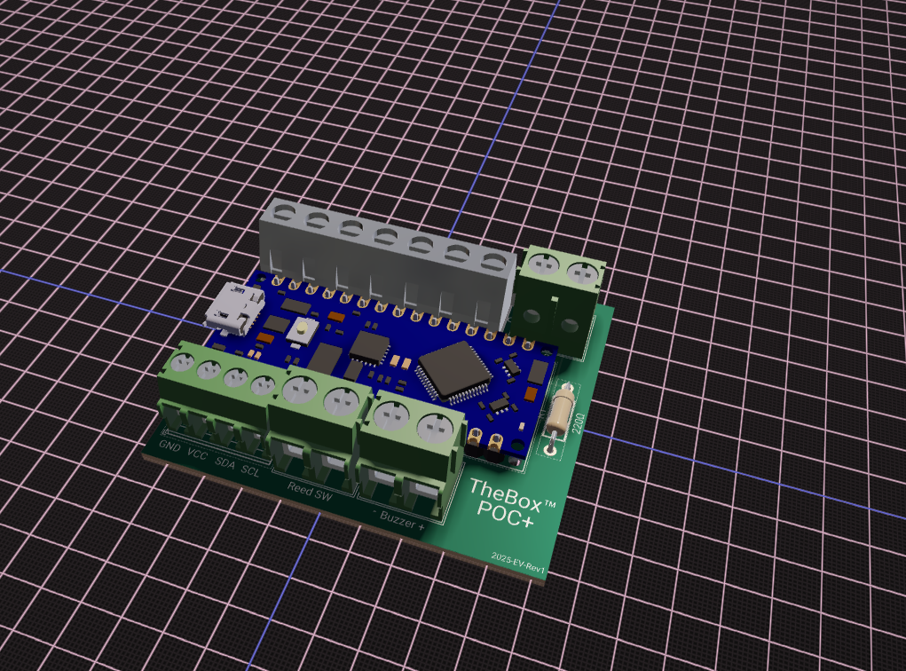 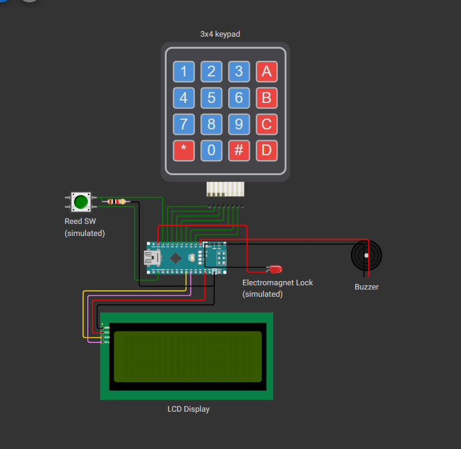- Designed with modular panels for easy customization and prototyping
- Integrated space for microcontroller (e.g., Arduino) and LCD keypad
- Hinged access door simulates real-world locking mechanism workflows
This was my way of applying design thinking and early prototyping to something both practical and scalable. A blend of fun and function.